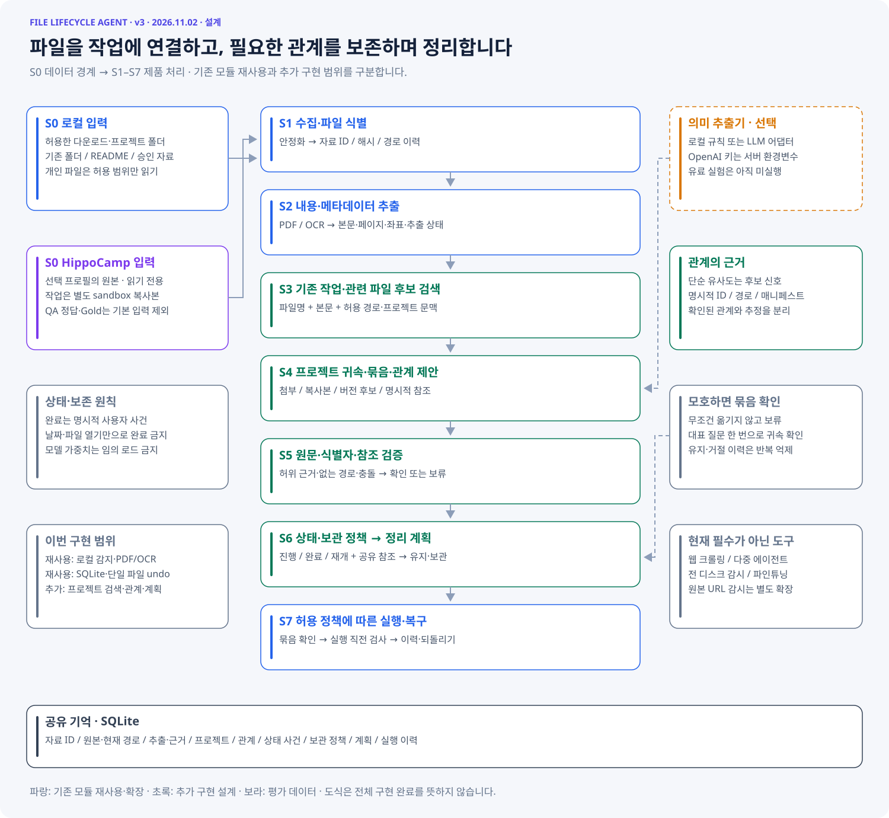
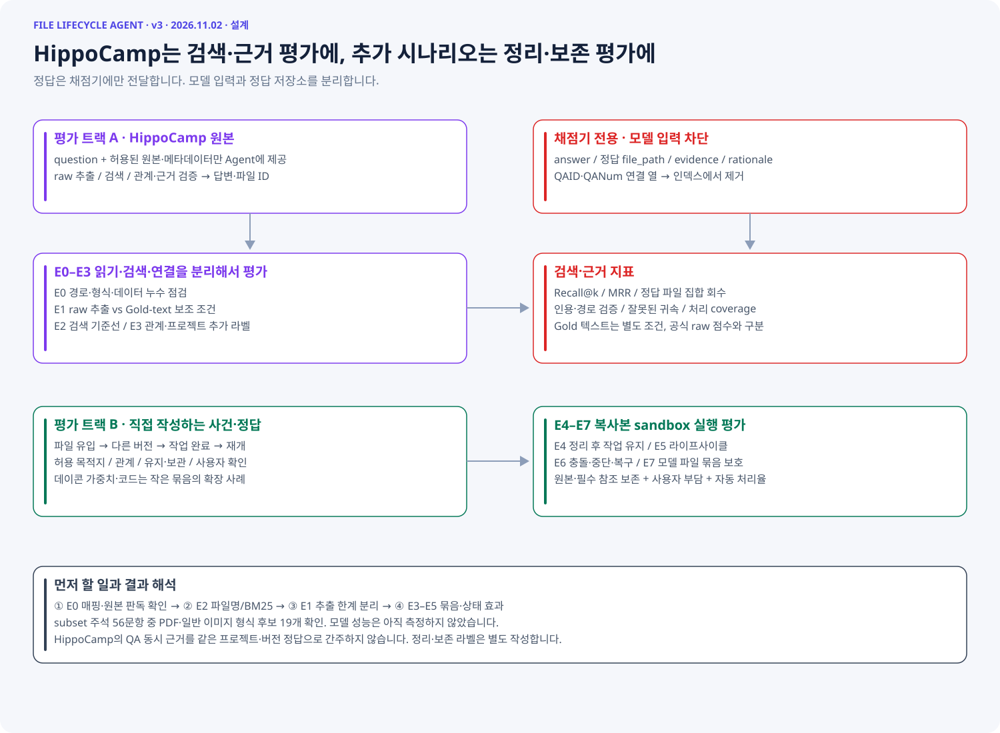

# 프로젝트 파일 라이프사이클 v3 — 실제 실행 결과 실행 디렉터리: `v3_20261102_143521`. 서버·유료 API 사용 0. 원본 파일 실행 없음. ## 실행한 전체 흐름 허용 파일 수집 → ID/해시 → PDF/OCR 추출 → 파일명/BM25 검색 → 명시적 프로젝트 ID 귀속 → REF 참조 검사 → 활성/완료·유지 상태 → 보관 계획 검증 → 이동·중단 복구·undo. 의미 판단은 명시적 ID/참조 규칙 기준선이다. LLM·임베딩 기반 귀속과 일반 문서의 암묵적 관계는 구현 완료로 보지 않는다. 검색 실제 데이터 트랙과 파일 실행 통제 트랙을 분리했다. ## E0/E2: HippoCamp 실제 원본 검색 고정 revision `ff212ff7ec1a60d28023e65f7e7c4df5a87f552c`. Adam/Bei subset, PDF/PNG/JPG/JPEG, 파일당 5MB 이하를 질문과 무관하게 선택. 방해 파일 포함 175개, 비어 있지 않은 추출 118개. 제외 문항·실패 상세는 retrieval.json에 기록. |프로필|방법|문항 수|Recall@5|Recall@10|MRR|전체 근거 회수@10| |---|---|---:|---:|---:|---:|---:| |Adam|name|5|0.376|0.404|0.600|0.200| |Adam|bm25|5|0.500|0.606|0.638|0.600| |Bei|name|7|0.306|0.378|0.571|0.286| |Bei|bm25|7|0.398|0.689|0.473|0.571| 추출 실패 문서도 corpus와 채점에서 유지했다. 검색은 양의 점수가 있는 파일만 반환하며 10개를 억지로 채우지 않는다. subset/형식·크기 선택 결과로 전체 581문항 점수와 비교할 수 없다. QA 정답·evidence·rationale는 인덱스에 사용하지 않았다. Gold-assisted 비교는 실행하지 않았다. ## E4/E5 통제 비교: 상태·참조 제약의 효과 30개 작성 과제(3개 패턴 × 10개 반복). 기대 정책을 알고 만든 개발 실험으로 일반화 성능이 아니다. file_only는 모든 파일 보관, project_state는 완료 상태만, state_and_refs는 활성 참조까지 보호한다. |조건|기대 정책 일치|필요 자료 오보관 제안|정리 가능 자료 처리율| |---|---:|---:|---:| |file_only|10/30|20|100%| |project_state|20/30|10|100%| |state_and_refs|30/30|0|100%| 최종 조건은 보관 가능한 10건에서 실제 이동→undo→바이트 일치를 검사했다. 나머지는 keep 계획을 검사했다. 이 결과는 사용자 부담 감소나 실제 프로젝트 정답의 증거가 아니라 상태·참조 보호 규칙의 동작 확인이다. ## E6/E7: 파일 실행 견고성 70/70 통과. 정상 보관/undo, hard-link 직후 중단과 재시작, 목적지 충돌, 활성 참조, stale plan, 모호한 프로젝트, dummy 가중치 참조 보호를 각 10회 반복했다. 기존 v2 회귀 테스트 16개도 통과했다. ## 실패 분석 및 다음 판정 Adam 실패 ID 92·93은 정답 근거가 각각 36·56개라 top-10에서 전체 회수가 구조적으로 불가능하다. 이것을 단순 모델 실패로 해석하면 안 된다. 후속 평가는 k별 이론 상한, 정답 수별 층화, 대용량 목록 필터링을 별도 과제로 보고한다. Bei 실패 ID 30·85·96은 정답 중 OCR 공백 파일이 각각 5/7·20/25·10/10개다. 사진의 시각 의미·유사 사진 판단은 텍스트 OCR만으로 처리할 수 없다. 공백 사례 중 펭귄 그림 1개를 직접 확인했으며 글자가 없었다. 57개 전체를 OCR 오류라고 단정하지 않는다. Bei MRR은 0.571→0.473으로 하락했다. BM25는 근거 회수 범위를 넓혔지만 첫 정답 순위는 악화되어 모든 지표에서 개선된 것은 아니다. - Adam: BM25 전체 근거 미회수 2/5건. ID: 92, 93. 검색 실패는 관찰했지만 OCR·어휘·추론 중 근본 원인은 Gold 대조/수동 검수 전에는 확정하지 않는다. - Bei: BM25 전체 근거 미회수 3/7건. ID: 30, 85, 96. 검색 실패는 관찰했지만 OCR·어휘·추론 중 근본 원인은 Gold 대조/수동 검수 전에는 확정하지 않는다. - 원문 추출 오류 또는 공백 57개. 이번 목록은 모두 empty extraction이며 네트워크/프로세스 오류는 없었다. 글자 없는 사진과 OCR 누락을 별도 구분해야 한다. - 다음 P0: 비어 있는 원문과 실제 정답 근거 구간을 수동 대조하고, 페이지 locator를 보존하는 추출 포맷으로 확장. - 다음 P1: Gold-assisted E1과 임베딩/LLM 검색 비교. 현재 결과가 낮으면 파일 정리를 자동화하기 전에 검색 근거 회수부터 개선. - 다음 P1: E3 실제 관계 30–50쌍 및 E4 실제 목적지 20–30개를 독립 검수. 현재 통제 정답을 실제 사용자 정답이라고 부르지 않음. - 다음 P2: 사용자 확인/수정 시간, 원본 코드·가중치 묶음의 정적 경로 실험. 실제 모델 파일은 이번에 내려받거나 실행하지 않음. ## 한계와 재현 프로젝트 ID가 명시되지 않으면 보류하는 보수적 MVP다. 실제 사용자 파일을 이동하지 않았으며 전체 묶음 원자성, undo 중 강제 종료, 전원 손실, 다른 볼륨, 적대적 동시 파일 변경은 보장하지 않는다. cv01이 필요한 학습/임베딩 실험은 이번 로컬 기준선에 포함하지 않았다. ```sh .venv/bin/python prototype/run_v3.py .venv/bin/python prototype/v3_ablation.py .venv/bin/python prototype/test_pipeline_v2.py .venv/bin/python prototype/report_v3.py ``` 실행 로그: experiments/v3_run.log. 원본/캐시는 experiments/v3_data에 보존(git 제외). 상세 결과: experiments/v3_20261102_143521/retrieval.json 및 experiments/v3_ablation_*/results.json.